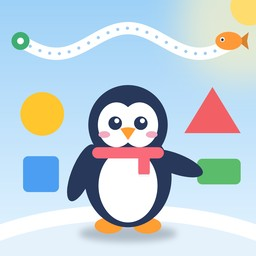

Spielend lernen mit Pino, dem kleinen Pinguin – für Kita-Kinder von 3 bis 6, ganz ohne Lesen.
Bald verfügbarUnser Weihnachtsgeschenk: Bis 31.12.2026 ist Pino Vorschule komplett gratis freigeschaltet. Ohne Abo, ohne Kauf.
Kita-Kinder von 3 bis 6 Jahren
iPhone und iPad, quer und hochkant (ab iOS 16) · 12 Sprachen
Keine Werbung · kein Konto · kein Tracking
Preise in Euro für Deutschland; in anderen Ländern zeigt der App Store den Landespreis. Abos verlängern sich automatisch und lassen sich jederzeit in den Einstellungen deiner Apple-ID kündigen.
Verantwortlich: Alexander Matthias Müller – Perlage Apps, Barnefeldstraße 12E, 31515 Wunstorf, Deutschland, E-Mail: info.perlage-apps@web.de. Du hast das Recht auf Auskunft, Berichtigung, Löschung, Einschränkung und Widerspruch (Art. 15–21 DSGVO) und kannst dich bei einer Aufsichtsbehörde beschweren, z. B. bei Die Landesbeauftragte für den Datenschutz Niedersachsen, Prinzenstraße 5, 30159 Hannover. Stand: November 2026.
Nein. Pino sagt jede Aufgabe, alles lässt sich ohne Lesen bedienen.
Auf dem Startbildschirm oben links auf das Zahnrad tippen und die Rechenaufgabe für Erwachsene lösen.
Drei Orte bleiben immer gratis, alles Gesammelte bleibt erhalten. Die Vollversion gibt es als Jahres-Abo (7 Tage gratis) oder einmalig „für immer“.
Im Elternbereich bei „Vollversion“ auf „Käufe wiederherstellen“ tippen. Mit der Familienfreigabe gilt der Kauf für die ganze Familie.
In den Einstellungen des iPhone oder iPad: dein Name → Abonnements → Pino Vorschule. Kündigen spätestens 24 Stunden vor Ablauf.
Noch eine Frage? Schreib uns: info.perlage-apps@web.de